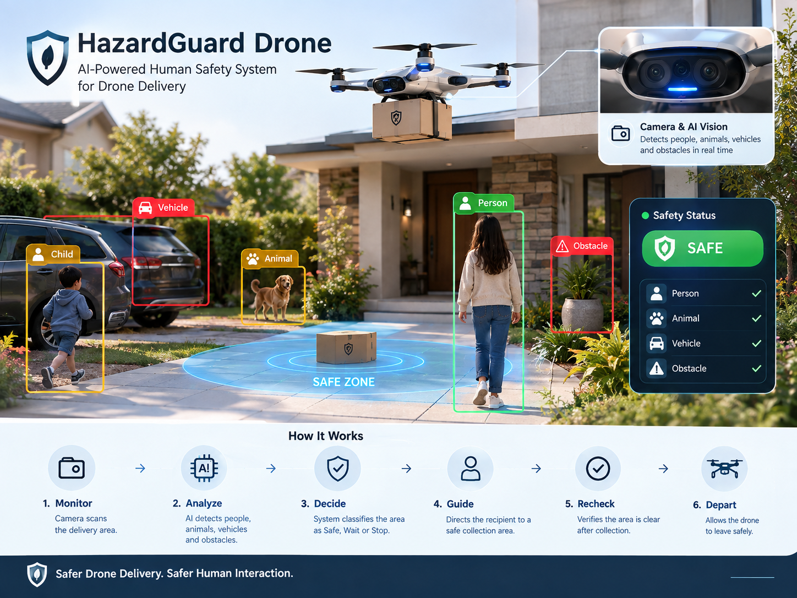

Saudi logistics data shows a large delivery volume, while drone parcel delivery has entered real-world trials. The next operational question is: how should the last pickup point be managed?
In Q2 2025, delivery orders in Saudi Arabia exceeded 101 million, including more than 45.68 million in Riyadh. In September 2025, an official drone parcel-delivery trial was conducted in Jeddah. These facts do not mean our solution is deployed; they show why delivery infrastructure and pickup points matter as drone logistics develops.
The station is not just a locker; it is an operational layer between the drone and the recipient.
Match package categories with suitable compartment requirements in the prototype.
Record arrival time, dwell time, and package status.
Open the assigned compartment with a package-linked OTP and log the pickup event.
A clear sequence from drone arrival to recorded pickup.
The drone reaches the assigned station.
The system links the package to its recipient.
Determine package category and storage requirements.
Select the suitable compartment and update its status.
Track status and dwell time.
Make the package ready and generate an OTP.
Accept the valid OTP and reject invalid ones.
Open the chamber and record pickup time.
A visual concept of the functions that will become a testable software prototype.
The previous-version assets will be replaced progressively with the new station simulation.

We will not use invented results; final numbers will come from actual tests.
Correct assignments out of all tested cases.
Acceptance of valid OTPs and rejection of invalid ones.
Time from arrival to recorded pickup.
The project proposes a smart pickup point that connects drone arrival, storage, verification, and traceability in one workflow. The next stage is to turn the design into a testable prototype and measure accuracy, processing time, and operational safety.
Build a working version of the compartments, access, and verification logic.
Test multiple arrival and pickup scenarios and record the results.
Study multi-station neighborhood coordination and centralized status management.
Occupational Health & Safety · Saudi Arabia 🇸🇦
These sources establish the Saudi logistics and drone-delivery context; they are not presented as proof that our proposed network is deployed.
Q2 2025 data reporting more than 101 million delivery orders, including more than 45.68 million in Riyadh.
Official source →Official documentation of a drone parcel-delivery trial in Jeddah in September 2025.
Official source →Research and experimentation related to autonomous drone delivery.
Research →Regulatory reference for unmanned aircraft in Saudi Arabia.
Official document →Official context for logistics development and smart technologies.
Report →